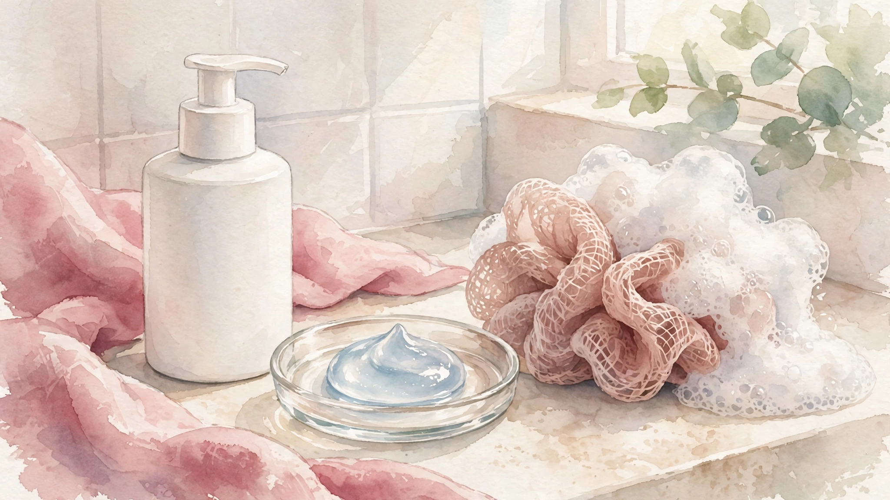
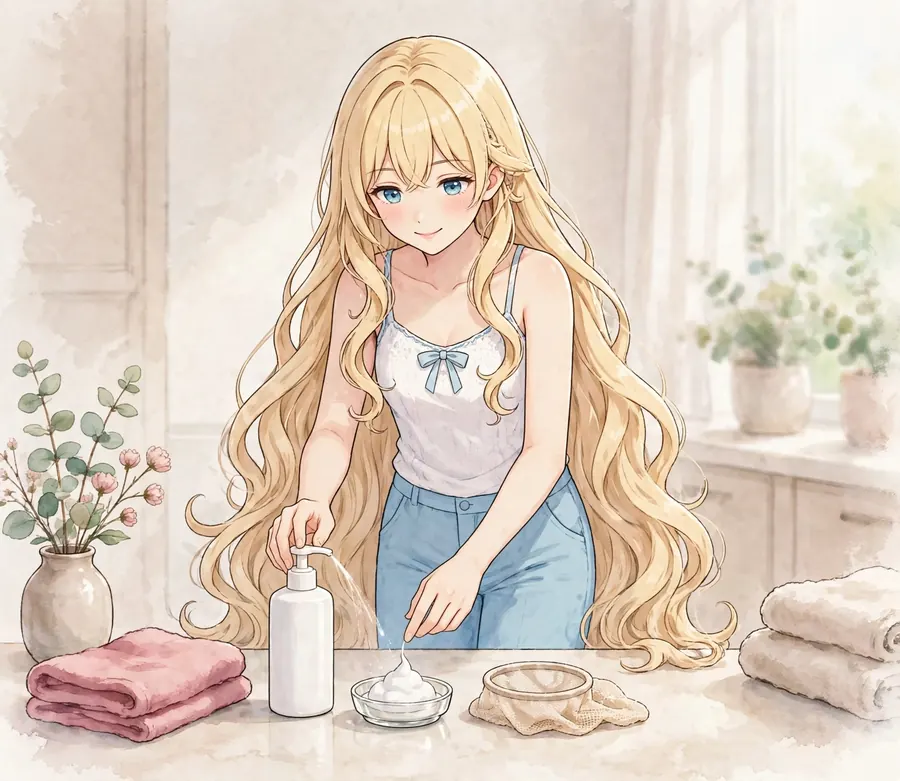

シャンプーの適量と泡立て方の目安

シャンプーの適量は、商品ごとに「ポンプ◯回分」などの案内がありますが、実際に必要な量は髪の長さと量で変わります。施術の現場では、お客様ごとに量を細かく変えています。この記事では、適量の決め方と泡立て方の目安を整理します。
適量は、髪の長さと量で決まる
目安の作り方は、まず商品の案内量から始めて、泡の広がり方で調整することです。ショートヘアとロングヘアでは、髪全体を包むのに必要な泡の量が違います。また、髪の量が多い方は、表面だけでなく内側まで泡を行き渡らせる分、量が必要になります。
私は現場で、「泡が頭皮全体に行き渡り、指が頭皮の上で滑らず動ける量」を適量の目安にしています。泡が少ないと指の摩擦が増え、多すぎるとすすぎに時間がかかります。その中間を探す感覚です。
泡は、手のひらで作ってから
シャンプーは、頭の上で泡立てるのではなく、手のひらで少量の水と混ぜて泡立ててからつけるのが基本です。先に泡を作っておくと、頭皮全体に均一に広がり、つけむらが減ります。特に、後頭部や耳の後ろは後回しになりやすいので、最初に泡を置く場所を決めておくと洗い残しに気づきやすくなります。
予洗いが十分だと、泡は少ない量でもよく立ちます。泡立ちが悪いと感じたら、シャンプーを足す前に、予洗いの長さを見直してみてください。
足りないときは「水」と「継ぎ足し」
洗っている途中で泡が足りなくなったら、シャンプーを直接足す前に、少量の水を加えて泡を立て直す方法があります。それでも足りなければ、半プッシュだけ継ぎ足す。少しずつ調整することで、多すぎる使用を防げます。
1回量が安定すると、1本がどれくらい持つかも読めてきます。買い替えや詰め替えのタイミングの管理にもつながるので、自分の適量を感覚として持っておくことは、意外に実用的です。
容器の形によっても、適量の作り方は変わります。泡で出てくるタイプのシャンプーは、泡立ての手間がない分、1回に出る量が決まっています。その場合は、ポンプ回数そのものが目安になります。詰め替えの際は、専用ボトルと中身の組み合わせが決まっている商品もあるため、表示を確認してください。また、家族で同じシャンプーを使う場合は、髪の長さが違う人同士で適量も異なります。「家族全員◯プッシュ」と決めず、一人ひとりの目安を持つことが、無駄のない使い方につながります。
自分の適量が決まったら、ポンプ回数をメモしておくのもおすすめです。家族に洗髪を頼む場面や、同じ商品を買い直したときにも、その記録がそのまま目安になります。

セラフィナ「泡は頭の上じゃなくて、手のひらで作るのがコツだね」

セラフィナ｜美容の道具箱の案内役
「量と表示が分かれば、美容は失敗しない。」——セラフィナと白猫のモコが、買う前のチェックポイントを案内します。綺麗になりたい気持ちに正直に、でも表示は冷静に読むのが、このサイトの約束です。